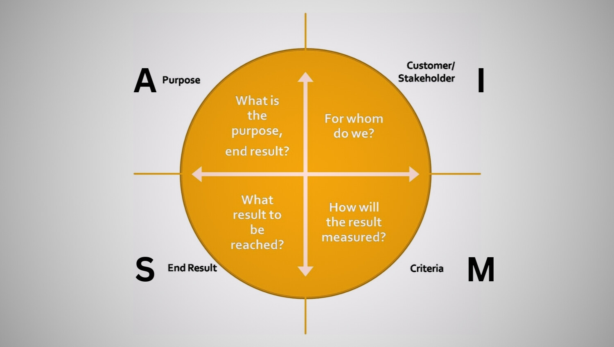

I had the privilege of working on an exciting sales data analytics project. It was based on a a hypothetical company called Narayan Hardwares, that supplies computer hardware and peripherals across India
If you want to practice on this dataset and try to gather insights yourself, you can download it from this official website of the Government of India:
Sales Director, Mr. Arjuna Rastogi, was frustrated by the lack of transparency in the sales data he was receiving from his regional managers. The verbal insights were often biased, and the endless Excel files were overwhelming. He needed clear, unbiased, and actionable insights to navigate the dynamically growing market and improve the company's declining sales.
In cases like these where the dataset was present in a MySQL database, the Power BI dashboard is connected to the MySQL database. However, this is often not the case as companies tend to use data warehousing tools like Terra Data, Snowflake etc. instead. Some of the lessons I learnt about how a company tackles this type of situations have been shared below.
In actual use cases, project management frameworks like the AIMS Grid are used to define the project’s purpose, stakeholders, end results, and success criteria.

AIMS Grid is a project management framework that helps teams clearly define and organise their project goals and tasks. The word "AIMS" stands for Aims, Inputs, Milestones, and Success:
1. Aims (A): This is about defining what the project wants to achieve. We can think of it as setting the main goal or purpose of the project.
2. Inputs (I): These are the resources needed to work toward the goal, like time, money, people, or any other tools.
3. Milestones (M): These are smaller goals or checkpoints to reach along the way, helping to track progress and stay on course.
4. Success (S): Here, we define what "success" will look like when the project is finished. It helps everyone know if the goals have been met.
After this, with the help of IT and Data Analysts Team, it is ensured that the dashboard connects seamlessly to the MySQL database without affecting daily operations. This helps streamline data gathering and provide Mr. Rastogi with the insights he needs to make data-driven decisions for increasing sales.
🔹Visualise trends and track regional sales,
🔹Identify focus areas for promotions and customer engagement, and
🔹Automate monthly reporting for easy decision-making.
This project was a fantastic learning experience in how a company handles similar situations, sales data analytics, and visualisation. I’m eager to apply these skills to future challenges!